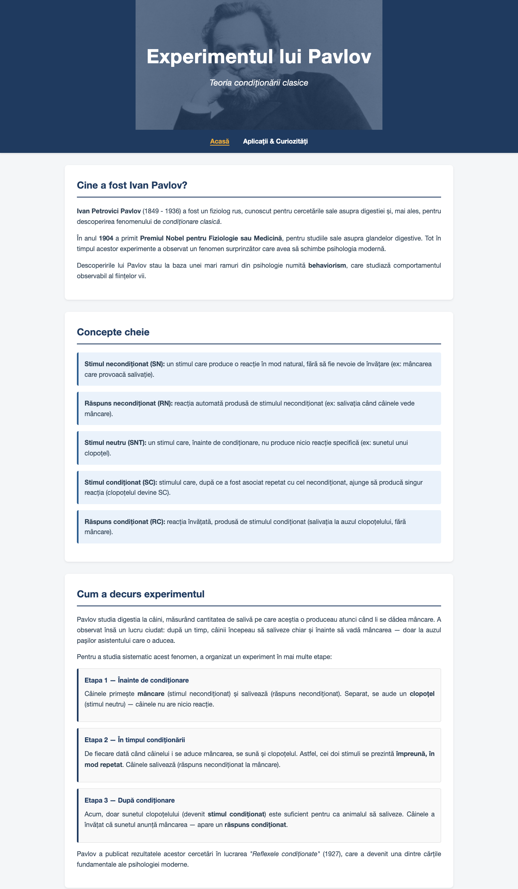
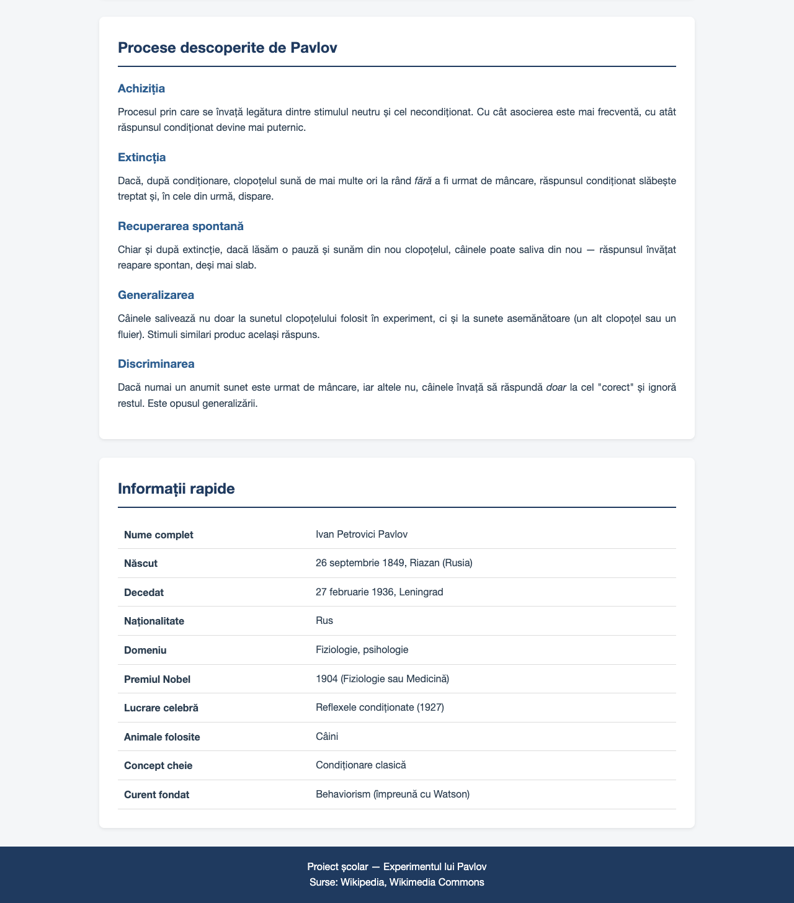
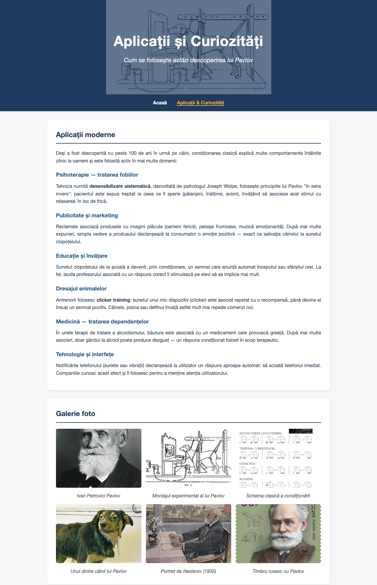
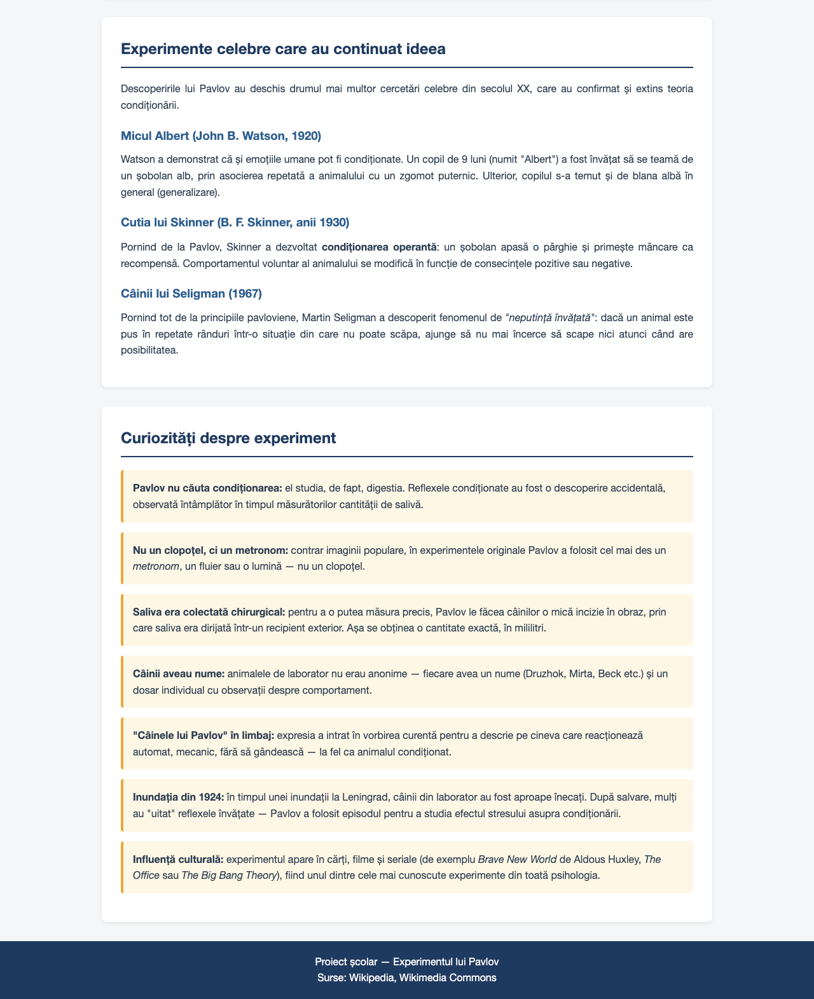

Am ales ca temă pentru lucrarea de atestat realizarea unui site web despre experimentul lui Ivan Petrovici Pavlov, unul dintre cele mai importante experimente din istoria psihologiei. Pavlov a descoperit, la sfârșitul secolului al XIX-lea, fenomenul numit condiționare clasică — felul în care un organism poate învăța să asocieze doi stimuli și să reacționeze la unul ca și cum ar fi celălalt.
Tema mi s-a părut interesantă pentru că face legătura între biologie, psihologie și comportament uman: deși experimentul a fost făcut pe câini, principiile descoperite explică multe lucruri din viața noastră de zi cu zi — de la reclame, la teama de stomatolog sau la modul în care reacționăm la notificările telefonului.
Realizarea unui site web mi-a permis să aplic cunoștințele de HTML și CSS învățate în orele de informatică. Site-ul este împărțit în două pagini: prima prezintă teoria și experimentul, iar a doua prezintă aplicațiile moderne și curiozitățile.
Această pagină este punctul de intrare în site și conține partea teoretică: cine a fost Pavlov, conceptele de bază ale condiționării clasice, etapele experimentului, alte procese descoperite, precum și un tabel cu informații rapide despre savant. În continuare este prezentată captura de ecran a paginii (împărțită în două jumătăți alăturate, pentru a încăpea pe pagină), urmată de codul sursă și de explicația lui.


<!DOCTYPE html>
<!-- Limba paginii este romana, ca sa fie inteleasa de cititoarele de ecran -->
<html lang="ro">
<head>
<!-- Setam codificarea pe UTF-8 ca sa apara corect diacriticele (ă, î, ș, ț, â) -->
<meta charset="UTF-8">
<!-- Face pagina sa arate bine si pe telefon (responsive) -->
<meta name="viewport" content="width=device-width, initial-scale=1.0">
<!-- Titlul care apare in tab-ul browserului -->
<title>Experimentul lui Pavlov - Condiționarea clasică</title>
<!-- Includem fisierul de stil partajat de ambele pagini -->
<link rel="stylesheet" href="stil.css">
<!-- Setam imaginea de fundal pentru antet (specifica acestei pagini) -->
<!-- Folosim portretul lui Ivan Pavlov din Wikimedia Commons -->
<style>
header {
background-image: linear-gradient(rgba(31, 58, 95, 0.7), rgba(31, 58, 95, 0.7)),
url('https://pymstatic.com/7157/conversions/ivan-pavlov-social.jpg');
}
</style>
</head>
<body>
<!-- ANTETUL: titlul mare al paginii -->
<header>
<h1>Experimentul lui Pavlov</h1>
<p>Teoria condiționării clasice</p>
</header>
<!-- MENIU DE NAVIGARE: link-uri catre cele doua pagini -->
<!-- Clasa "activ" marcheaza pagina curenta -->
<nav>
<a href="index.html" class="activ">Acasă</a>
<a href="atractii.html">Aplicații & Curiozități</a>
</nav>
<!-- CONTINUTUL PRINCIPAL al paginii -->
<main>
<!-- Sectiunea 1: Despre Pavlov si introducerea generala -->
<section id="despre">
<h2>Cine a fost Ivan Pavlov?</h2>
<p>
<strong>Ivan Petrovici Pavlov</strong> (1849 - 1936) a fost un
fiziolog rus, cunoscut pentru cercetările sale asupra digestiei
și, mai ales, pentru descoperirea fenomenului de
<em>condiționare clasică</em>.
</p>
<p>
În anul <strong>1904</strong> a primit
<strong>Premiul Nobel pentru Fiziologie sau Medicină</strong>,
pentru studiile sale asupra glandelor digestive. Tot în timpul
acestor experimente a observat un fenomen surprinzător care
avea să schimbe psihologia modernă.
</p>
<p>
Descoperirile lui Pavlov stau la baza unei mari ramuri din
psihologie numită <strong>behaviorism</strong>, care studiază
comportamentul observabil al ființelor vii.
</p>
</section>
<!-- Sectiunea 2: Concepte cheie -->
<section id="concepte">
<h2>Concepte cheie</h2>
<div class="concept">
<strong>Stimul necondiționat (SN):</strong> un stimul care
produce o reacție în mod natural, fără să fie nevoie de învățare
(ex: mâncarea care provoacă salivație).
</div>
<div class="concept">
<strong>Răspuns necondiționat (RN):</strong> reacția automată
produsă de stimulul necondiționat (ex: salivația când câinele
vede mâncare).
</div>
<div class="concept">
<strong>Stimul neutru (SNT):</strong> un stimul care, înainte
de condiționare, nu produce nicio reacție specifică (ex: sunetul
unui clopoțel).
</div>
<div class="concept">
<strong>Stimul condiționat (SC):</strong> stimulul care, după
ce a fost asociat repetat cu cel necondiționat, ajunge să
producă singur reacția (clopoțelul devine SC).
</div>
<div class="concept">
<strong>Răspuns condiționat (RC):</strong> reacția învățată,
produsă de stimulul condiționat (salivația la auzul
clopoțelului, fără mâncare).
</div>
</section>
<!-- Sectiunea 3: Experimentul propriu-zis - etape -->
<section id="experiment">
<h2>Cum a decurs experimentul</h2>
<p>
Pavlov studia digestia la câini, măsurând cantitatea de salivă
pe care aceștia o produceau atunci când li se dădea mâncare.
A observat însă un lucru ciudat: după un timp, câinii începeau
să saliveze chiar și înainte să vadă mâncarea — doar la auzul
pașilor asistentului care o aducea.
</p>
<p>
Pentru a studia sistematic acest fenomen, a organizat un
experiment în mai multe etape:
</p>
<div class="etapa">
<h4>Etapa 1 — Înainte de condiționare</h4>
<p>
Câinele primește <strong>mâncare</strong> (stimul
necondiționat) și salivează (răspuns necondiționat).
Separat, se aude un <strong>clopoțel</strong> (stimul
neutru) — câinele nu are nicio reacție.
</p>
</div>
<div class="etapa">
<h4>Etapa 2 — În timpul condiționării</h4>
<p>
De fiecare dată când câinelui i se aduce mâncarea, se sună
și clopoțelul. Astfel, cei doi stimuli se prezintă
<strong>împreună, în mod repetat</strong>. Câinele
salivează (răspuns necondiționat la mâncare).
</p>
</div>
<div class="etapa">
<h4>Etapa 3 — După condiționare</h4>
<p>
Acum, doar sunetul clopoțelului (devenit
<strong>stimul condiționat</strong>) este suficient pentru
ca animalul să saliveze. Câinele a învățat că sunetul
anunță mâncarea — apare un
<strong>răspuns condiționat</strong>.
</p>
</div>
<p>
Pavlov a publicat rezultatele acestor cercetări în lucrarea
<em>"Reflexele condiționate"</em> (1927), care a devenit una
dintre cărțile fundamentale ale psihologiei moderne.
</p>
</section>
<!-- Sectiunea 4: Procese suplimentare descoperite de Pavlov -->
<section id="procese">
<h2>Procese descoperite de Pavlov</h2>
<h3>Achiziția</h3>
<p>
Procesul prin care se învață legătura dintre stimulul neutru
și cel necondiționat. Cu cât asocierea este mai frecventă, cu
atât răspunsul condiționat devine mai puternic.
</p>
<h3>Extincția</h3>
<p>
Dacă, după condiționare, clopoțelul sună de mai multe ori la
rând <em>fără</em> a fi urmat de mâncare, răspunsul condiționat
slăbește treptat și, în cele din urmă, dispare.
</p>
<h3>Recuperarea spontană</h3>
<p>
Chiar și după extincție, dacă lăsăm o pauză și sunăm din nou
clopoțelul, câinele poate saliva din nou — răspunsul învățat
reapare spontan, deși mai slab.
</p>
<h3>Generalizarea</h3>
<p>
Câinele salivează nu doar la sunetul clopoțelului folosit în
experiment, ci și la sunete asemănătoare (un alt clopoțel sau
un fluier). Stimuli similari produc același răspuns.
</p>
<h3>Discriminarea</h3>
<p>
Dacă numai un anumit sunet este urmat de mâncare, iar altele
nu, câinele învață să răspundă <em>doar</em> la cel "corect"
și ignoră restul. Este opusul generalizării.
</p>
</section>
<!-- Sectiunea 5: Tabel cu informatii rapide despre Pavlov -->
<section id="informatii">
<h2>Informații rapide</h2>
<table>
<!-- Fiecare rand este o pereche eticheta-valoare -->
<tr>
<td>Nume complet</td>
<td>Ivan Petrovici Pavlov</td>
</tr>
<tr>
<td>Născut</td>
<td>26 septembrie 1849, Riazan (Rusia)</td>
</tr>
<tr>
<td>Decedat</td>
<td>27 februarie 1936, Leningrad</td>
</tr>
<tr>
<td>Naționalitate</td>
<td>Rus</td>
</tr>
<tr>
<td>Domeniu</td>
<td>Fiziologie, psihologie</td>
</tr>
<tr>
<td>Premiul Nobel</td>
<td>1904 (Fiziologie sau Medicină)</td>
</tr>
<tr>
<td>Lucrare celebră</td>
<td>Reflexele condiționate (1927)</td>
</tr>
<tr>
<td>Animale folosite</td>
<td>Câini</td>
</tr>
<tr>
<td>Concept cheie</td>
<td>Condiționare clasică</td>
</tr>
<tr>
<td>Curent fondat</td>
<td>Behaviorism (împreună cu Watson)</td>
</tr>
</table>
</section>
</main>
<!-- SUBSOLUL paginii -->
<footer>
<p>Proiect școlar — Experimentul lui Pavlov</p>
<p>Surse: Wikipedia, Wikimedia Commons</p>
</footer>
</body>
</html>
În secțiunea <head> sunt setate informațiile pe care
browserul le folosește pentru afișare, dar care nu apar direct în
pagină:
<meta charset="UTF-8"> — codificarea de caractere,
necesară pentru afișarea corectă a diacriticelor (ă, â, î, ș, ț).<meta name="viewport"> — face pagina să arate
bine și pe telefoane (design responsive).<title> — titlul tab-ului din browser.<link rel="stylesheet" href="stil.css"> — leagă
pagina de fișierul cu stiluri.<style> cu o regulă specifică doar
acestei pagini, pentru imaginea de fundal a antetului (portretul lui
Pavlov).Pagina folosește elemente semantice din HTML5, care descriu rolul fiecărei zone (nu doar aspectul ei):
<header> — antetul mare cu titlul și subtitlul,
peste imaginea cu Pavlov.<nav> — bara de navigare cu cele două link-uri.
Link-ul paginii curente are clasa activ pentru a fi
evidențiat în meniu.<main> — conținutul principal al paginii.<section> — fiecare zonă tematică (despre,
concepte, experiment, procese, informații).<footer> — subsolul cu informații despre proiect.Pagina conține cinci secțiuni, fiecare cu rol clar:
.concept care îi dă fundal
bleu și o bară laterală albastră..etapa (înainte / în timpul / după condiționare).Pe parcursul paginii am folosit mai multe tag-uri HTML pentru a marca sensul textului:
<strong> — pentru cuvintele importante
(concepte, ani, nume).<em> — pentru termenii care trebuie evidențiați
cu italic (titluri de cărți, expresii străine).<table>, <tr>,
<td> — pentru tabelul de informații.<div class="..."> — pentru cutiile speciale
(concept, etapă), care primesc stiluri din stil.css.
A doua pagină a site-ului prezintă aplicațiile practice
ale teoriei lui Pavlov, o galerie foto, alte experimente celebre care
au pornit de la descoperirea lui și o serie de curiozități. Scopul ei
este să arate că teoria din 1900 nu e doar o curiozitate de manual, ci
se folosește concret și astăzi. Pagina folosește același fișier
de stil (stil.css) ca prima, ceea ce face site-ul
unitar ca aspect.


<!DOCTYPE html>
<!-- A doua pagina a site-ului: aplicatii moderne, galerie si curiozitati -->
<html lang="ro">
<head>
<!-- Codificare UTF-8 pentru diacritice -->
<meta charset="UTF-8">
<!-- Setare pentru telefoane -->
<meta name="viewport" content="width=device-width, initial-scale=1.0">
<!-- Titlul tab-ului -->
<title>Aplicații și curiozități - Experimentul lui Pavlov</title>
<!-- Acelasi fisier de stil ca prima pagina -->
<link rel="stylesheet" href="stil.css">
<!-- Imagine de fundal pentru antet (specifica acestei pagini) -->
<!-- Folosim imaginea cu Pavlov si echipa sa, din laborator -->
<style>
header {
background-image: linear-gradient(rgba(31, 58, 95, 0.7), rgba(31, 58, 95, 0.7)),
url('https://girardmeister.com/wp-content/uploads/2014/11/Ivan.jpg');
}
</style>
</head>
<body>
<!-- ANTETUL paginii -->
<header>
<h1>Aplicații și Curiozități</h1>
<p>Cum se folosește astăzi descoperirea lui Pavlov</p>
</header>
<!-- MENIU DE NAVIGARE -->
<!-- "activ" este pe a doua pagina pentru ca aici suntem -->
<nav>
<a href="index.html">Acasă</a>
<a href="atractii.html" class="activ">Aplicații & Curiozități</a>
</nav>
<!-- CONTINUTUL PRINCIPAL -->
<main>
<!-- Sectiunea 1: Aplicatii moderne ale teoriei -->
<section id="aplicatii">
<h2>Aplicații moderne</h2>
<p>
Deși a fost descoperită cu peste 100 de ani în urmă pe câini,
condiționarea clasică explică multe comportamente întâlnite
zilnic la oameni și este folosită activ în mai multe domenii:
</p>
<!-- Fiecare aplicatie are un mic subtitlu si un paragraf descriptiv -->
<h3>Psihoterapie — tratarea fobiilor</h3>
<p>
Tehnica numită <strong>desensibilizare sistematică</strong>,
dezvoltată de psihologul Joseph Wolpe, folosește principiile
lui Pavlov "în sens invers": pacientul este expus treptat la
ceea ce îl sperie (păianjeni, înălțime, avion), învățând să
asocieze acel stimul cu relaxarea, în loc de frică.
</p>
<h3>Publicitate și marketing</h3>
<p>
Reclamele asociază produsele cu imagini plăcute (oameni
fericiți, peisaje frumoase, muzică emoționantă). După mai
multe expuneri, simpla vedere a produsului declanșează la
consumator o emoție pozitivă — exact ca salivația câinelui
la sunetul clopoțelului.
</p>
<h3>Educație și învățare</h3>
<p>
Sunetul clopoțelului de la școală a devenit, prin condiționare,
un semnal care anunță automat începutul sau sfârșitul orei.
La fel, lauda profesorului asociată cu un răspuns corect îi
stimulează pe elevi să se implice mai mult.
</p>
<h3>Dresajul animalelor</h3>
<p>
Antrenorii folosesc <strong>clicker training</strong>: sunetul
unui mic dispozitiv (clicker) este asociat repetat cu o
recompensă, până devine el însuși un semnal pozitiv. Câinele,
pisica sau delfinul învață astfel mult mai repede comenzi noi.
</p>
<h3>Medicină — tratarea dependențelor</h3>
<p>
În unele terapii de tratare a alcoolismului, băutura este
asociată cu un medicament care provoacă greață. După mai multe
asocieri, doar gândul la alcool poate produce dezgust — un
răspuns condiționat folosit în scop terapeutic.
</p>
<h3>Tehnologie și interfețe</h3>
<p>
Notificările telefonului (sunete sau vibrații) declanșează la
utilizator un răspuns aproape automat: să scoată telefonul
imediat. Companiile cunosc acest efect și îl folosesc pentru
a menține atenția utilizatorului.
</p>
</section>
<!-- Sectiunea 2: Galerie cu mai multe imagini -->
<!-- Imaginile sunt incarcate de pe Wikimedia Commons (sursa libera) -->
<section id="galerie">
<h2>Galerie foto</h2>
<div class="galerie">
<!-- Fiecare <figure> contine o poza si o legenda -->
<figure>
<img src="https://upload.wikimedia.org/wikipedia/commons/thumb/7/7d/Ivan_Pavlov_NLM3.jpg/500px-Ivan_Pavlov_NLM3.jpg"
alt="Portretul lui Ivan Pavlov">
<figcaption>Ivan Petrovici Pavlov</figcaption>
</figure>
<figure>
<img src="https://upload.wikimedia.org/wikipedia/commons/thumb/a/aa/Ivan_Pavlov_research_on_dog%27s_reflex_setup.jpg/500px-Ivan_Pavlov_research_on_dog%27s_reflex_setup.jpg"
alt="Pavlov in laborator cu un caine">
<figcaption>Montajul experimental al lui Pavlov</figcaption>
</figure>
<figure>
<img src="https://upload.wikimedia.org/wikipedia/commons/thumb/9/94/Classical_Conditioning.svg/500px-Classical_Conditioning.svg.png"
alt="Schema condiționării clasice">
<figcaption>Schema clasică a condiționării</figcaption>
</figure>
<figure>
<img src="https://upload.wikimedia.org/wikipedia/commons/thumb/e/ec/One_of_Pavlov%27s_dogs.jpg/500px-One_of_Pavlov%27s_dogs.jpg"
alt="Unul dintre cainii lui Pavlov">
<figcaption>Unul dintre câinii lui Pavlov</figcaption>
</figure>
<figure>
<img src="https://upload.wikimedia.org/wikipedia/commons/thumb/f/fd/Nesterov-Pavlov.jpg/500px-Nesterov-Pavlov.jpg"
alt="Portret pictat al lui Pavlov de Nesterov">
<figcaption>Portret de Nesterov (1935)</figcaption>
</figure>
<figure>
<img src="https://upload.wikimedia.org/wikipedia/commons/thumb/c/c2/RUSMARKA-3335.jpg/500px-RUSMARKA-3335.jpg"
alt="Timbru postal cu Ivan Pavlov">
<figcaption>Timbru rusesc cu Pavlov</figcaption>
</figure>
</div>
</section>
<!-- Sectiunea 3: Experimente celebre derivate -->
<section id="experimente">
<h2>Experimente celebre care au continuat ideea</h2>
<p>
Descoperirile lui Pavlov au deschis drumul mai multor cercetări
celebre din secolul XX, care au confirmat și extins teoria
condiționării.
</p>
<h3>Micul Albert (John B. Watson, 1920)</h3>
<p>
Watson a demonstrat că și emoțiile umane pot fi condiționate.
Un copil de 9 luni (numit "Albert") a fost învățat să se teamă
de un șobolan alb, prin asocierea repetată a animalului cu un
zgomot puternic. Ulterior, copilul s-a temut și de blana albă
în general (generalizare).
</p>
<h3>Cutia lui Skinner (B. F. Skinner, anii 1930)</h3>
<p>
Pornind de la Pavlov, Skinner a dezvoltat
<strong>condiționarea operantă</strong>: un șobolan apasă o
pârghie și primește mâncare ca recompensă. Comportamentul
voluntar al animalului se modifică în funcție de consecințele
pozitive sau negative.
</p>
<h3>Câinii lui Seligman (1967)</h3>
<p>
Pornind tot de la principiile pavloviene, Martin Seligman a
descoperit fenomenul de <em>"neputință învățată"</em>: dacă
un animal este pus în repetate rânduri într-o situație din
care nu poate scăpa, ajunge să nu mai încerce să scape nici
atunci când are posibilitatea.
</p>
</section>
<!-- Sectiunea 4: Curiozitati -->
<section id="curiozitati">
<h2>Curiozități despre experiment</h2>
<!-- Folosim cutii ".curiozitate" pentru a evidentia fiecare fapt -->
<div class="curiozitate">
<strong>Pavlov nu căuta condiționarea:</strong> el studia, de
fapt, digestia. Reflexele condiționate au fost o descoperire
accidentală, observată întâmplător în timpul măsurătorilor
cantității de salivă.
</div>
<div class="curiozitate">
<strong>Nu un clopoțel, ci un metronom:</strong> contrar
imaginii populare, în experimentele originale Pavlov a folosit
cel mai des un <em>metronom</em>, un fluier sau o lumină —
nu un clopoțel.
</div>
<div class="curiozitate">
<strong>Saliva era colectată chirurgical:</strong> pentru a o
putea măsura precis, Pavlov le făcea câinilor o mică incizie
în obraz, prin care saliva era dirijată într-un recipient
exterior. Așa se obținea o cantitate exactă, în mililitri.
</div>
<div class="curiozitate">
<strong>Câinii aveau nume:</strong> animalele de laborator nu
erau anonime — fiecare avea un nume (Druzhok, Mirta, Beck etc.)
și un dosar individual cu observații despre comportament.
</div>
<div class="curiozitate">
<strong>"Câinele lui Pavlov" în limbaj:</strong> expresia a
intrat în vorbirea curentă pentru a descrie pe cineva care
reacționează automat, mecanic, fără să gândească — la fel ca
animalul condiționat.
</div>
<div class="curiozitate">
<strong>Inundația din 1924:</strong> în timpul unei inundații
la Leningrad, câinii din laborator au fost aproape înecați.
După salvare, mulți au "uitat" reflexele învățate — Pavlov a
folosit episodul pentru a studia efectul stresului asupra
condiționării.
</div>
<div class="curiozitate">
<strong>Influență culturală:</strong> experimentul apare în
cărți, filme și seriale (de exemplu <em>Brave New World</em>
de Aldous Huxley, <em>The Office</em> sau
<em>The Big Bang Theory</em>), fiind unul dintre cele mai
cunoscute experimente din toată psihologia.
</div>
</section>
</main>
<!-- SUBSOLUL paginii -->
<footer>
<p>Proiect școlar — Experimentul lui Pavlov</p>
<p>Surse: Wikipedia, Wikimedia Commons</p>
</footer>
</body>
</html>
Structura generală este foarte asemănătoare cu cea de la
index.html: aceleași elemente semantice
(<header>, <nav>,
<main>, <footer>) și același fișier
de stil. Sunt totuși câteva diferențe:
<style> în
<head>.activ este pe link-ul
"Aplicații & Curiozități", pentru că aceea este pagina curentă.<h3> și un paragraf descriptiv..curiozitate (fundal cald, bară laterală chihlimbar).
Galeria este construită cu un <div class="galerie">
care conține mai multe elemente <figure>. Fiecare
<figure> are o imagine
(<img src="...">) și o legendă
(<figcaption>). Aspectul (mai multe coloane,
același raport) este dat de regulile din stil.css, pe care
le voi explica în capitolul următor.
Imaginile sunt încărcate de pe Wikimedia Commons și două surse externe (toate cu licență liberă), ceea ce înseamnă că nu trebuie ținute local — se descarcă automat când vizitatorul deschide pagina.
Fiecare imagine are atributul alt cu o descriere a
conținutului. Acest text apare în locul imaginii dacă aceasta nu se
încarcă și este citit de programele pentru persoanele cu deficiențe
de vedere.
Acest fișier conține toate regulile de stilizare aplicate site-ului. Este folosit de ambele pagini HTML, ceea ce înseamnă că o singură modificare aici se aplică automat pe tot site-ul. Această separare între structură (HTML) și aspect (CSS) este una dintre regulile de bază ale dezvoltării web moderne.
/* =====================================================
Fisier de stil partajat de ambele pagini ale site-ului
Tema: Experimentul lui Pavlov
===================================================== */
/* Resetam marginile implicite ale browserului */
* {
margin: 0;
padding: 0;
box-sizing: border-box;
}
/* Stil general pentru intreaga pagina */
body {
/* Fonturi sans-serif moderne, potrivite pentru un text stiintific */
font-family: "Helvetica Neue", Arial, sans-serif;
line-height: 1.6;
color: #2c3e50; /* gri-albastru inchis, mai bland decat negrul */
background-color: #f4f6f8; /* gri foarte deschis, ca o foaie de laborator */
}
/* Antetul paginii - imaginea mare de sus cu titlul */
header {
/* Imaginea de fundal este setata in fiecare pagina (este diferita) */
background-size: contain; /* aspect fit: pastram intreaga imagine, fara taiere */
background-position: center;
background-repeat: no-repeat;
background-color: #1f3a5f; /* aceeasi culoare ca a gradientului, pentru zonele goale */
color: white;
text-align: center;
padding: 100px 20px;
}
/* Titlul principal al paginii */
header h1 {
font-size: 3em;
margin-bottom: 10px;
letter-spacing: 1px;
}
/* Subtitlul de sub titlu */
header p {
font-size: 1.3em;
font-style: italic;
opacity: 0.95;
}
/* Bara de navigare cu link-uri catre pagini */
nav {
background-color: #1f3a5f; /* albastru inchis academic */
padding: 15px;
text-align: center;
position: sticky; /* ramane lipita sus cand dam scroll */
top: 0;
z-index: 10;
box-shadow: 0 2px 4px rgba(0, 0, 0, 0.1);
}
/* Link-urile din meniu */
nav a {
color: white;
text-decoration: none;
margin: 0 15px;
font-weight: bold;
transition: color 0.2s;
}
/* Cand trecem mouse-ul peste un link */
nav a:hover {
color: #e8a93b; /* accent cald: chihlimbar */
}
/* Link-ul paginii curente este evidentiat */
nav a.activ {
color: #e8a93b;
border-bottom: 2px solid #e8a93b;
}
/* Containerul principal pentru continut */
main {
max-width: 1000px;
margin: 30px auto; /* centram pe orizontala */
padding: 0 20px;
}
/* Fiecare sectiune din pagina */
section {
background-color: white;
margin-bottom: 30px;
padding: 30px;
border-radius: 8px;
box-shadow: 0 2px 5px rgba(0, 0, 0, 0.08);
}
/* Titlurile sectiunilor */
section h2 {
color: #1f3a5f;
border-bottom: 2px solid #1f3a5f;
padding-bottom: 10px;
margin-bottom: 20px;
}
/* Subtitluri (h3) folosite in sectiuni */
section h3 {
color: #2c5d8f; /* nuanta de albastru putin mai deschisa */
margin-top: 20px;
margin-bottom: 10px;
}
/* Paragrafele primesc spatiu sub ele */
section p {
margin-bottom: 15px;
text-align: justify; /* aliniere pe ambele parti */
}
/* Galeria de imagini - folosim grid pentru a aseza pozele frumos */
.galerie {
display: grid;
grid-template-columns: repeat(auto-fit, minmax(250px, 1fr));
gap: 15px;
margin-top: 20px;
}
/* Fiecare poza din galerie */
.galerie figure {
text-align: center;
}
.galerie img {
width: 100%;
height: 200px;
object-fit: cover; /* taie imaginea ca sa incapa fara distorsiune */
border-radius: 5px;
/* O tranzitie ca sa avem un efect lin la hover */
transition: transform 0.3s;
}
/* Cand trecem mouse-ul peste poza, se mareste putin */
.galerie img:hover {
transform: scale(1.05);
}
/* Textul de sub fiecare poza */
.galerie figcaption {
margin-top: 8px;
font-style: italic;
color: #555;
}
/* Listele cu marcatori */
ul {
margin-left: 25px;
margin-bottom: 15px;
}
/* Fiecare element din lista are un mic spatiu intre ele */
ul li {
margin-bottom: 8px;
}
/* Tabelul cu informatii */
table {
width: 100%;
border-collapse: collapse;
margin-top: 15px;
}
/* Celulele tabelului */
table td, table th {
padding: 10px;
border-bottom: 1px solid #ddd;
text-align: left;
}
/* Antet de tabel - albastru academic */
table th {
background-color: #1f3a5f;
color: white;
}
/* Prima coloana (cand nu avem antet) este ingrosata */
table td:first-child {
font-weight: bold;
}
/* Cutie speciala pentru curiozitati - se evidentiaza fata de text */
.curiozitate {
background-color: #fff7e6; /* crem cald */
border-left: 4px solid #e8a93b; /* chihlimbar */
padding: 15px;
margin: 15px 0;
border-radius: 4px;
}
/* Cutie pentru concepte cheie / definitii */
.concept {
background-color: #eaf2fb; /* bleu pal */
border-left: 4px solid #2c5d8f;
padding: 15px;
margin: 15px 0;
border-radius: 4px;
}
/* Etapele experimentului - lista numerotata, evidentiata */
.etapa {
background-color: #f9f9f9;
border: 1px solid #e0e0e0;
border-left: 4px solid #1f3a5f;
padding: 15px;
margin: 15px 0;
border-radius: 4px;
}
.etapa h4 {
color: #1f3a5f;
margin-bottom: 8px;
}
/* Subsolul paginii */
footer {
background-color: #1f3a5f;
color: white;
text-align: center;
padding: 20px;
margin-top: 30px;
}
/* Reguli pentru ecrane mici (telefoane) */
@media (max-width: 600px) {
header h1 {
font-size: 2em;
}
nav a {
display: block;
margin: 5px 0;
}
}
Selectorul * de la începutul fișierului anulează
marginile și padding-ul implicite ale browserului și activează
box-sizing: border-box, astfel încât dimensiunile
elementelor să fie ușor de calculat.
Pe body sunt setate fontul (Helvetica Neue, sans-serif —
un font modern, potrivit pentru un text științific), culoarea
textului și culoarea de fundal a paginii (un gri foarte deschis, ca
o foaie de laborator).
Am ales o paletă inspirată din mediul academic / științific, cu un accent cald pentru cutiile de curiozități:
| Culoare | Cod hex | Utilizare |
|---|---|---|
| Albastru închis | #1f3a5f | meniu, titluri, subsol, antet de tabel |
| Albastru mediu | #2c5d8f | subtitluri (h3), bara cutiei „concept" |
| Chihlimbar | #e8a93b | accent cald, link-ul activ, cutia „curiozitate" |
| Gri-deschis | #f4f6f8 | fundalul paginii |
| Bleu pal | #eaf2fb | fundalul cutiei „concept" |
| Crem cald | #fff7e6 | fundalul cutiei „curiozitate" |
header are background-size: contain, ceea ce
înseamnă aspect fit: imaginea se încadrează întreagă, fără
a fi tăiată. Spațiul rămas este umplut cu albastru închis. Peste imagine
e un gradient semitransparent (setat în fiecare pagină separat) care
întunecă imaginea, ca textul alb să fie lizibil.
nav are position: sticky; top: 0, ceea ce face
ca meniul să rămână lipit sus când utilizatorul derulează pagina —
astfel link-urile sunt mereu la îndemână.
Trei tipuri de cutii cu fundal colorat și o bară laterală groasă pe
stânga (border-left) sunt folosite pentru a evidenția
anumite tipuri de conținut:
.concept — bleu pal, pentru definițiile termenilor;.etapa — gri foarte deschis, pentru pașii
experimentului;.curiozitate — crem cald, pentru fapte interesante.Galeria foto folosește CSS Grid, care aranjează automat imaginile într-un număr potrivit de coloane, în funcție de lățimea ecranului:
.galerie {
display: grid;
grid-template-columns: repeat(auto-fit, minmax(250px, 1fr));
gap: 15px;
}
Funcția repeat(auto-fit, minmax(250px, 1fr)) înseamnă:
„umple linia cu cât mai multe coloane care au cel puțin 250px lățime".
Astfel, pe un ecran lat vom vedea 4 imagini pe rând, iar pe telefon
doar una sau două. Imaginile au și un mic efect de mărire la
hover.
La sfârșitul fișierului există un bloc @media (max-width: 600px)
care se activează doar pe ecranele mici (telefoane). Acolo titlul
antetului devine mai mic, iar link-urile din meniu se așază unul sub
altul (în loc să fie aliniate pe orizontală), ca să încapă bine.
Realizarea acestui proiect a fost o experiență utilă din mai multe puncte de vedere:
<header>, <nav>,
<main>, <section>,
<footer>), care fac codul mai clar și mai accesibil.Pe viitor, proiectul ar putea fi îmbunătățit prin: